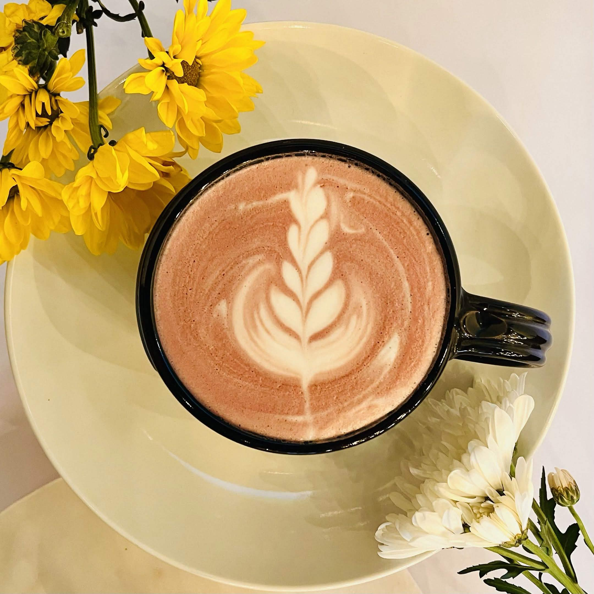
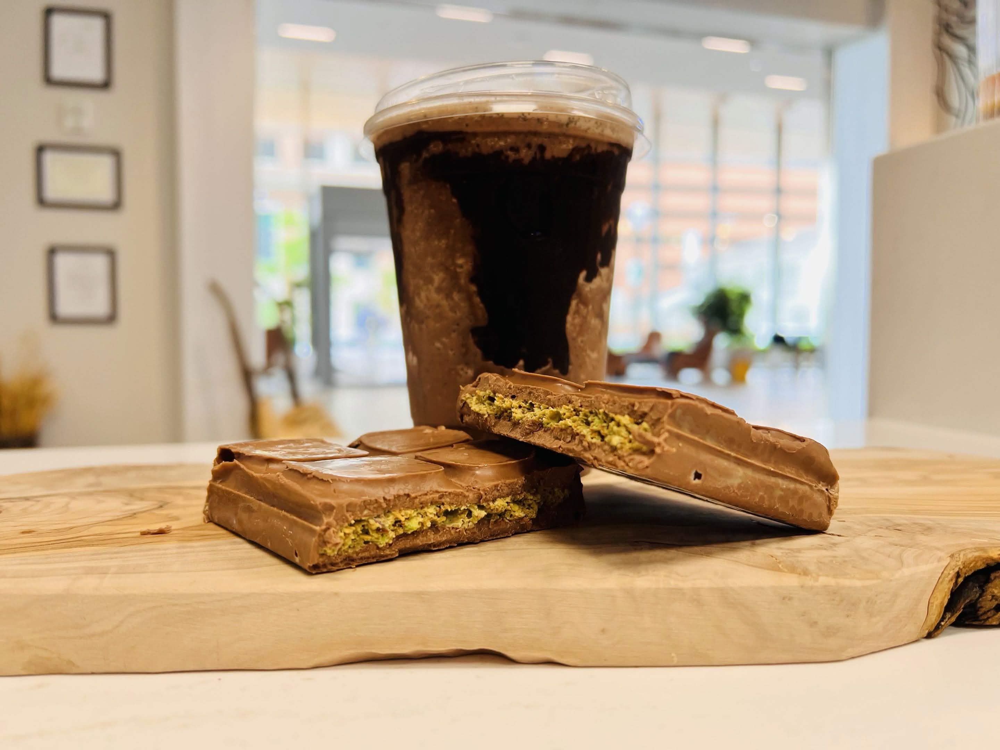
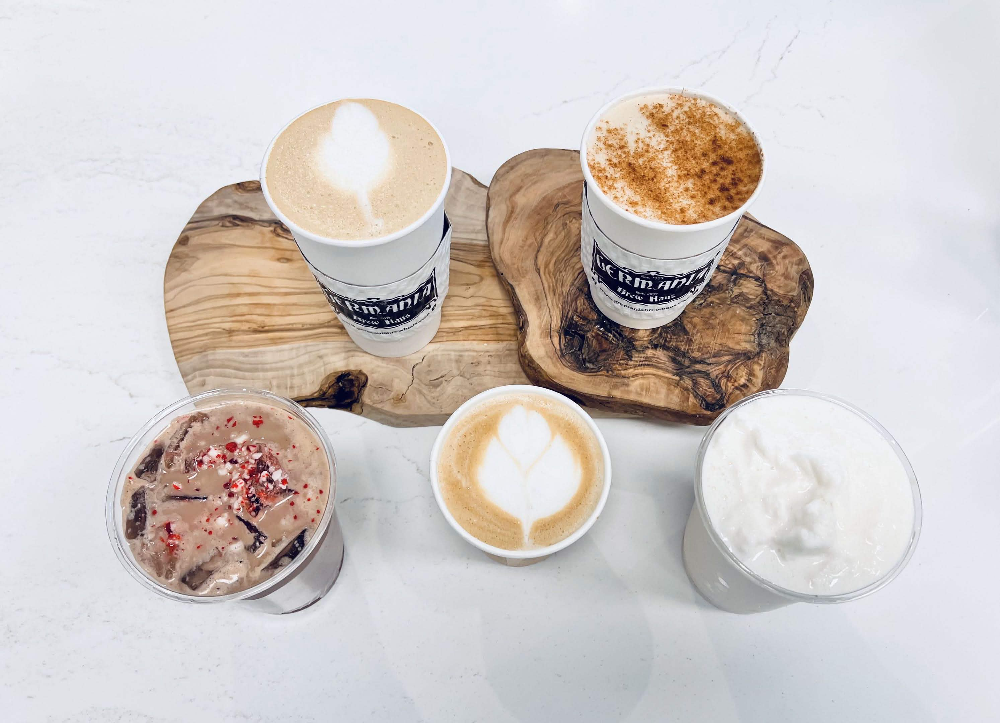
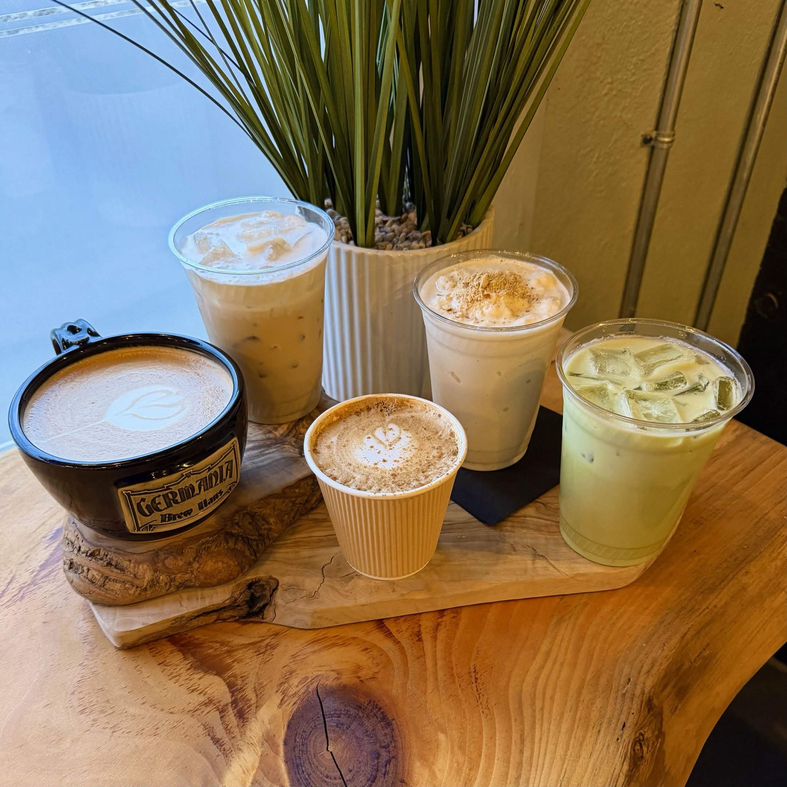

Every seasonal menu at Germania goes through a meticulous 8–10 week journey from spark of an idea to the drink in your hand. Here's how we do it.
SpringSummerFallWinter
Currently In Progress
Summer 2026 Menu
Our team is deep in recipe development — testing, tasting, and refining the drinks that'll define your summer.
IdeasVotingRecipe DevPre-Launch
Weeks 1–2
01
Idea Submissions
Every seasonal menu starts with our team. Baristas, managers, and kitchen staff submit drink ideas — flavor combos, cultural inspirations, customer requests they've been hearing. No idea is too wild at this stage.
Open submission form goes out to all 4 locations
Staff pitch flavor profiles, ingredient ideas, and vibes
Typically receive 30–50 unique submissions
Week 3
02
Team Voting
The full team votes on their favorites. Every voice matters — from our newest barista to our head chef. The top vote-getters move forward to development.
Anonymous voting across all locations
Top 8–12 concepts advance to recipe development
Team sees results live — builds excitement

Week 4
03
Concept Finalization
Leadership reviews the top picks, considers seasonality, ingredient sourcing, menu balance, and operational feasibility. The final lineup gets the green light.
Balance sweet, bridge, artisanal, and tea categories
Evaluate ingredient availability and cost
Final menu of 5–8 new seasonal drinks selected

Weeks 5–8
04
Recipe Development
This is where the magic happens. Our Chef and team spend 3–4 weeks perfecting every recipe — haus-made syrups, sauce ratios, temperature profiles, and presentation. Every drink gets tested dozens of times.
Haus-made syrups and sauces crafted from scratch
Multiple rounds of taste testing with the full team
Nutrition calculated from actual recipe ingredients
Cost analysis ensures quality at a fair price

Weeks 9–10
05
Pre-Launch
Recipes are locked. Now we prepare for launch — training every barista across all 4 locations, shooting photos, building signage, and updating our digital menus. Every location launches simultaneously.
Staff training at all 4 Germania locations
Professional photography and menu design
POS system updates and ingredient ordering
Social media teasers build anticipation

Launch Day
06
Menu Launch
Launch day is a celebration. All 4 locations debut the new menu together. Our team is excited because they helped create it — and that energy is contagious. Your new favorite drink is waiting.
Simultaneous launch across Alton, Godfrey, East Alton & Jerseyville
Team-created drinks get credited to their inventors